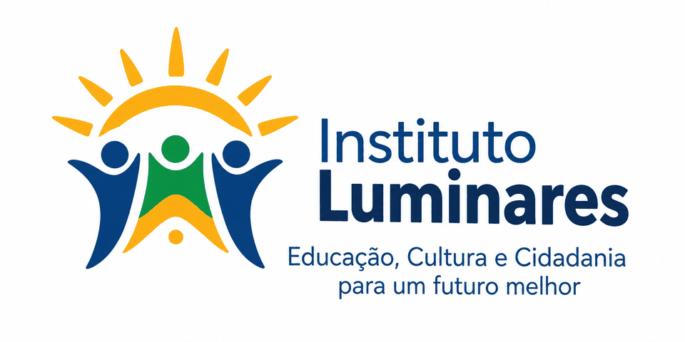
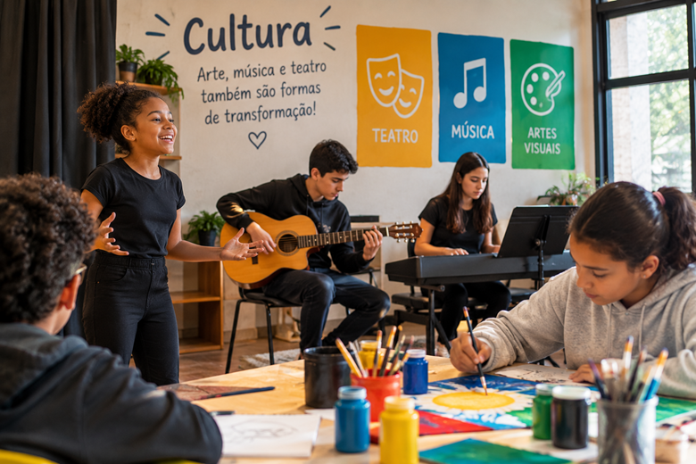
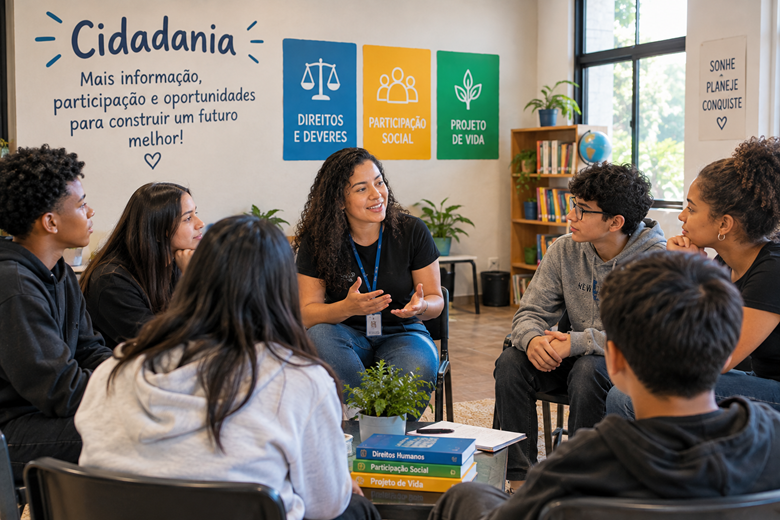
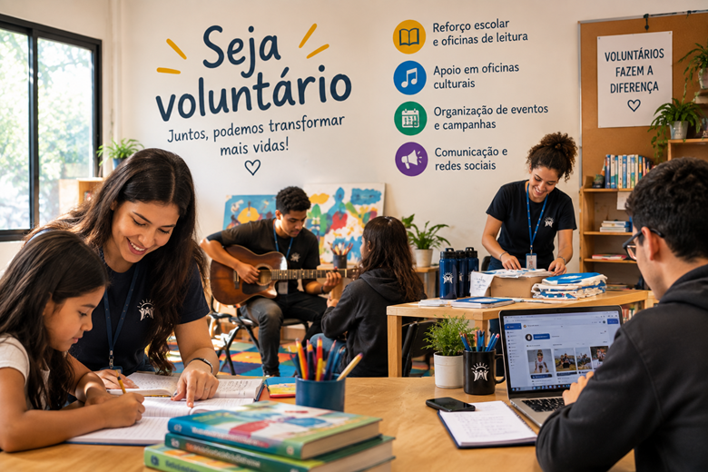

Educação
Aulas de reforço, oficinas de leitura e apoio escolar para crianças e jovens.

Nossas ações se organizam em três frentes. Conheça cada uma delas e descubra como participar como voluntário ou apoiar com uma doação.
Aulas de reforço, oficinas de leitura e apoio escolar para crianças e jovens.

Oficinas de teatro, música e artes visuais que valorizam a expressão de cada participante.

Rodas de conversa e orientação sobre direitos, participação social e projeto de vida.

Você pode contribuir com o seu tempo e o seu conhecimento em diferentes atividades:
As campanhas de doação mantêm as atividades do Instituto. Veja como colaborar:
| Tipo | O que aceitamos | Como doar |
|---|---|---|
| Financeira | Contribuições únicas ou mensais | Pix: doacoes@institutoluminares.org.br |
| Alimentos | Itens não perecíveis | Entrega na sede, de segunda a sexta, das 8h às 17h |
| Livros e materiais | Livros, cadernos e materiais escolares | Entrega na sede ou combinada pelo contato |